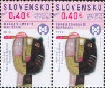

メニュー画面に戻る
メニュー画面に戻る
 画像を見る
画像を見る
 ショッピングカートを利用する
ショッピングカートを利用する
ＳＭ７８「児童画挿絵展」×2
LIST 2012/02
＜略号＞
BK=切手帳、S/S=小型シート、(シ)=シール式、CEPT=「EUROPA」シリーズ、□=無目打
( )内の数字は、種類の数
全体に取り消し線のあるものは、売り切れです。(2017.03.29)
品番のみに取り消し線があるものは、入荷待ちです。
青文字の品番は、再入荷（在庫僅）です。
最近売り切れの時期が早まっております。
ご注文はおはやめにどうぞ。
★ 恐れ入りますが1000円未満のご注文はお受けできません ★
当店の価格はすべて【税込】です。
| 品番 | 品名 | 単価 |
|---|---|---|
| ＳＭ １ | 国連 絶滅危機の鳥 (12) | 1900 |
| ＳＭ ２ | 国連 経済社会理事会 (6) | 1090 |
| ＳＭ ３ | 国連 国際森林年 (6) | 1090 |
| ＳＭ ４ | アメリカ 州の旗[5] 10連コイル （シ） | 800 |
| ＳＭ ５ | アメリカ 危機の動物 トラ （シ） | 100 |
| ＳＭ ６ | アメリカ ハヌッカ祭、クワンザ祭 (2)（シ） | 160 |
| ＳＭ ７ | アメリカ Ｘマス飾り ＢＫ３タイプ （シ） | 4640 |
| ＳＭ ８ | アメリカ Ｘマス飾り ＢＫの単片 (12)（シ） | *1270 |
| ＳＭ ９ | アメリカ Ｘマス 聖母子名画ＢＫ （シ） | 1600 |
| ＳＭ１０ | アメリカ Ｘマス 聖母子名画ＢＫの単片 （シ） | 80 |
| ＳＭ１１ | アメリカ ベアデンの絵 横４連 （シ） | 320 |
| ＳＭ１２ | オーランド Ｘマス 花 (1) | 140 |
| ＳＭ１３ | オーランド 風景SEPAC (2) | 445 |
| ＳＭ１４ | アンドラ（仏） ラグビー楕円形 (1) | 180 |
| ＳＭ１５ | アンドラ（仏） 民族舞踊、風景凹S/S | 290 |
| ＳＭ１６ | アンドラ（仏） 蘭の花 (1) | 120 |
| ＳＭ１７ | アンドラ（仏） 野バラの実 (1) | 200 |
| ＳＭ１８ | アンドラ（仏） 1419年アンドラ議会開設 (1) | 150 |
| ＳＭ１９ | アンドラ（仏） 教会のイコン画 天使 (1) | 120 |
| ＳＭ２０ | アンドラ（仏） 木の葉に国章 (1) | 115 |
| ＳＭ２１ | オーストラリア ゴルフ (5) | 900 |
| ＳＭ２２ | オーストラリア 伝説の生物 (6)＋S/S | 1300 |
| ＳＭ２３ | オーストラリア 英連邦サミット (1) | 90 |
| ＳＭ２４ | オーストラリア 韓国友好民族楽器 (2) | 350 |
| ＳＭ２５ | オーストラリア Ｘマスツリー他 (5) | 580 |
| ＳＭ２６ | オーストラリア 英霊の日 (2) | 280 |
| ＳＭ２７ | オーストリア CEPT2011 タネつきS/S | 345 |
| ＳＭ２８ | オーストリア ロトくじ 25年 ○型S/S | 290 |
| ＳＭ２９ | オーストリア デザインコンペ作品 (1) | 125 |
| ＳＭ３０ | オーストリア Ｘマス 古画、教会 (3) | 390 |
| ＳＭ３１ | オーストリア モーツアルト 220年 (1) | 140 |
| ＳＭ３２ | オーストリア ウィーン西駅改築 (1) | 140 |
| ＳＭ３３ | オーストリア 美術館150年 (1) | 125 |
| ＳＭ３４ | オーストリア スキー選手ゲルグル (1) | 125 |
| ＳＭ３５ | オーストリア 郵趣連盟90年 (1) | 165 |
| ＳＭ３６ | オーストリア 劇作家ライムント (1) | 125 |
| ＳＭ３７ | オーストリア 教会の青銅彫刻 凹(1) | 180 |
| ＳＭ３８ | オーストリア サッカー100年 靴 (1) | 125 |
| ＳＭ３７と同じものでしたので削除いたします | ||
| ＳＭ４０ | オーストリア エルツベルク鉄道のＳＬ 凹(1) | 180 |
| ＳＭ４１ | オーストリア 乳ガン対策募金 (1) | 200 |
| ＳＭ４２ | オーストリア 美術館エゴンシーレ画 (1) | 125 |
| ＳＭ４３ | カナダ 黒人民権運動家ベスト （シ）(1) | 100 |
| ＳＭ４４ | カナダ 黒人野球ジェンキンズ （シ）(1) | 100 |
| ＳＭ４５ | カナダ 技術革新 ４連 （シ）ＢＫ | 390 |
| ＳＭ４６ | カナダ 競艇優勝 S/S＋（シ）(1) | 490 |
| ＳＭ４７ | カナダ 街道名物巨大看板 S/S＋（シ）(4) | 810 |
| ＳＭ４８ | カナダ ミュージシャン (4) | 390 |
| ＳＭ５０ | 中国 少数民族伝統スポーツ[2] (4) | 185 |
| ＳＭ５５ | 中国 遠洋運送 ２連 | 95 |
| ＳＭ６０ | 中国 アジア国際切手展 (2)＋S/S | 295 |
| ＳＭ６１ | 台湾 観光10連×２ | 515 |
| ＳＭ６２ | 台湾 香山九老図 ３連S/S | 330 |
| ＳＭ６３ | 台湾 普通梅花高額100 凹(1) | 610 |
| ＳＭ６４ | 台湾 建国100年 横４連＋S/S | 425 |
| ＳＭ６５ | 台湾 年賀辰 (2)＋S/S | 180 |
| ＳＭ６６ | 台湾 ボーイスカウト100年 (2) | 105 |
| ＳＭ６７ | 台湾 ローカル鉄道 たて５連 | 300 |
| ＳＭ６８ | 台湾 阿里山森林鉄道100年 S/S | 180 |
| ＳＭ６９ | チェコ 映画ポスター (2) | 270 |
| ＳＭ７０ | チェコ 世界郵便の日 凹(1) | 275 |
| ＳＭ７２ | チェコ 探検家エルストナー 凹(1) | 205 |
| ＳＭ７３ | チェコ クジャクと門＋タブ 凹(1) | 140 |
| ＳＭ７４ | チェコ バラの花＋タブ (1) | 150 |
| ＳＭ７５ | チェコ 美術シリーズ2011 凹(3) | 1050 |
| ＳＭ７６ | チェコ 美術シリーズ2011 凹４枚シート | 4200 |
| ＳＭ７８ | スロバキア 児童画挿絵展 (1) | 130 |
| ＳＭ７９ | スロバキア 19世紀の作家ホッジャ 凹(1) | 130 |
| ＳＭ８０ | スロバキア 政治家ヤン・ツイケル (1) | 160 |
| ＳＭ８２ | スロバキア 美術シリーズ2011 凹(1) | 380 |
| ＳＭ８３ | スロバキア 美術シリーズ2011 凹 ４枚シート | 1520 |
| ＳＭ８４ | スロバキア 美術聖誕図全面凹 S/S | 505 |
| ＳＭ８５ | スロバキア Ｘマス飾りの魚 (1) | 130 |
| ＳＭ８６ | スロバキア 切手の日タブつき (1) | 160 |
| ＳＭ８７ | フィンランド 作家アホ150年 （シ）S/S | 290 |
| ＳＭ８８ | フィンランド 漫画100年 ６連（シ）S/S | 875 |
| ＳＭ８９ | フィンランド 普通高額国章 （シ）(2) | 1450 |
| ＳＭ９０ | フィンランド ローズヒップ （シ）(1) | 145 |
| ＳＭ９１ | フィンランド 屋根の雪 （シ）(1) | 185 |
| ＳＭ９２ | フィンランド Ｘマス トントゥ（シ）(2) | 280 |
| ＳＭ９５ | フランス 新普通７連 凹版と平版S/S | 1550 |
| ＳＭ９６ | フランス 新図案普通 凹(5) | 1165 |
| ＳＭ９７ | フランス 新図案コイル20g 凹(1) | 130 |
| ＳＭ９８ | フランス プリキャンセル公用花 (4) | 345 |
| ＳＭ９９ | フランス ユネスコ公用ラクダ､NZ風景 (2) | 335 |
| ＳＭ１００ | フランス パリ消防団200年 10連S/S | 1270 |
| ＳＭ１０１ | フランス 赤十字救命活動 ５連S/S | 1060 |
| ＳＭ１０２ | フランス 赤十字シャンソン歌手 ６連S/S | 1190 |
| ＳＭ１０３ | フランス 重量挙げ ○型２連S/S | 315 |
| ＳＭ１０４ | フランス フランスの庭園 ２連S/S | 1020 |
| ＳＭ１０５ | フランス ＴＧＶ新幹線30年 (1) | 130 |
| ＳＭ１０６ | フランス 観光ロワイヤンの教会 凹(1) | 120 |
| ＳＭ１０７ | フランス インスリン発見90年 (1) | 130 |
| ＳＭ１０９ | フランス 上院議長モネルビル 凹(1) | 130 |
| ＳＭ１１０ | フランス 欧州理事会公用 (1) | 190 |
| ＳＭ１１１ | フランス 国立宇宙研究センター 凹(1) | 120 |
| ＳＭ１１２ | フランス クリッパートン島鳥、カニ 凹(1) | 200 |
| ＳＭ１１４ | 仏領南極 調査船マリウス・ムーテ 凹(1) | 120 |
| ＳＭ１１５ | 仏領南極 クローゼ島マリン入江1961 (1) | 120 |
| ＳＭ１１６ | 仏領南極 クローゼ島マリン入江2011 (1) | 120 |
| ＳＭ１１８ | 仏領南極 モロイ基地 凹２連 | 240 |
| ＳＭ１１９ | 仏領南極 カタツムリ 凹(1) | 120 |
| ＳＭ１２０ | 仏領南極 巡視船オシリス (1) | 120 |
| ＳＭ１２２ | 仏領南極 探検家アムンゼン 凹(1) | 200 |
| ＳＭ１２３ | 仏領南極 探検家ボシエール 凹(1) | 290 |
| ＳＭ１２５ | 仏領南極 外人部隊の駐留 ２連＋タブ | 240 |
| ＳＭ１２６ | 仏領南極 駆逐艦フォルバン 凹S/S | 220 |
| ＳＭ１２７ | 仏領南極 魚 (1) | 485 |
| ＳＭ１２９ | 仏領南極 ジャンヌダルク港 ４連S/S | 485 |
| ＳＭ１３０ | 仏領南極 南極の輸送機 ６連凹S/S | 1210 |
| ＳＭ１３１ | ポリネシア マルキーズ島 凹２連 | 850 |
| ＳＭ１３２ | ポリネシア 熱帯魚12連 （シ）ＢＫ | 2030 |
| ＳＭ１３３ | ポリネシア 映画バウンティ撮影50年 (1) | 850 |
| ＳＭ１３４ | ポリネシア 蘭の花香料入 (1) | 240 |
| ＳＭ１３５ | ポリネシア ３島の風景 (3) | 425 |
| ＳＭ１３６ | ポリネシア 伝説の女タアロア (1) | 120 |
| ＳＭ１３７ | ポリネシア ヘイバの陶芸品 (3) | 680 |
| ＳＭ１３８ | ドイツ 漫画競馬場にて （シ）(1) | 210 |
| ＳＭ１３９ | イギリス ロアルド･ダールの漫画 (6)＋S/S | 1815 |
| ＳＭ１４０ | 香港 タマール開発計画 S/S | 225 |
| ＳＭ１４１ | 香港 香港博物館 (6)＋S/S | 720 |
| ＳＭ１４３ | アイスランド 2010Ｘマス新目打 （シ）(2) | 440 |
| ＳＭ１４４ | イタリア 有人宇宙飛行50年 （シ）(1) | 225 |
| ＳＭ１４５ | 韓国 ７世紀バルヘ王国 大判シート | 540 |
| ＳＭ１４６ | 韓国 ７世紀バルヘ王国 シートから４連 | 180 |
| ＳＭ１４７ | 韓国 豪州友好50年民族楽器 (2) | 90 |
| ＳＭ１４８ | 韓国 ＵＮＣＣＤ会議 (1) | 45 |
| ＳＭ１４９ | 韓国 輸出１兆ドル達成 ２連 | 90 |
| ＳＭ１５０ | 韓国 年賀辰 (1)＋S/S | 135 |
| ＳＭ１５２ | マカオ ＷＷＦ50年鳥 横連＋S/S | 540 |
| ＳＭ１６０ | マーヨット 小鳥 (1) | 120 |
| ＳＭ１６１ | マーヨット 女性と壺 (1) | 120 |
| ＳＭ１６２ | マーヨット 101番目の州地図 (1) | 120 |
| ＳＭ１６３ | マーヨット ダイバーたち (1) | 120 |
| ＳＭ１６４ | マーヨット デパニ山地 (1) | 120 |
| ＳＭ１６５ | マーヨット 南極連絡船デュフレーヌ (1) | 120 |
| ＳＭ１６６ | マーヨット カレハニ湖 (1) | 120 |
| ＳＭ１６７ | マーヨット 北の小島 (1) | 120 |
| ＳＭ１６８ | マーヨット 魚の養殖池 (1) | 120 |
| ＳＭ１６９ | マーヨット 女性の集会 (1) | 120 |
| ＳＭ１７０ | マーヨット 漁師が帰ってきた (1) | 120 |
| ＳＭ１７１ | マーヨット インド洋地域切手展 (1) | 120 |
| ＳＭ１７３ | ニューカレドニア 砂糖工場の煙突凹(1) | 760 |
| ＳＭ１７４ | ニューカレドニア 国際森林年 (1) | 205 |
| ＳＭ１７５ | ニューカレドニア シンボル３連 S/S | 560 |
| ＳＭ１７６ | ニューカレドニア 保護公園の鳥と花 ４連S/S | 745 |
| ＳＭ１７７ | ニューカレドニア 偉人ジャック･ラフルール 凹(1) | 1690 |
| ＳＭ１７９ | ニューカレドニア Ｘマス子供とギフト (1) | 185 |
| ＳＭ１８０ | ニューカレドニア 風景、鹿、ヘビ (4) | 745 |
| ＳＭ１８１ | ニューカレドニア 少年スポーツ (1) | 130 |
| ＳＭ１８２ | ポーランド SM190同図案 S/S | 550 |
| ＳＭ１８３ | サンピエール ヨットレース凹(1) | 210 |
| ＳＭ１８４ | サンピエール ベルトラン入江 ２連＋タブ凹 | 1010 |
| ＳＭ１８５ | サンピエール Ｘマス (1) | 120 |
| ＳＭ１８６ | サンピエール 駆逐艦（SM126同図） 凹S/S | 220 |
| ＳＭ１８７ | サンピエール 補給艦 ４連S/S | 485 |
| ＳＭ１８８ | サンピエール 近代史絵巻 ６連長大型S/S | 730 |
| ＳＭ１８９ | スペイン ゴヤ賞映画 (1) | 95 |
| ＳＭ１９０ | スウェーデン キューリー夫人 S/S | 550 |
| ＳＭ１９１ | スウェーデン 毛糸編み 5連凹 （シ）ＢＫ | 1380 |
| ＳＭ１９２ | スウェーデン 毛糸編み 5連 余白切落し | 1380 |
| ＳＭ１９３ | スウェーデン 毛糸編み 手袋 ４枚S/S | 1220 |
| ＳＭ１９４ | スウェーデン 毛糸編み 手袋 S/S単片 | 310 |
| ＳＭ１９５ | スウェーデン Ｘマス花10枚 （シ）ＢＫ | 1265 |
| ＳＭ１９６ | スウェーデン Ｘマス花 ＢＫから田連 | 510 |
| ＳＭ１９７ | スウェーデン リルバブと公園凹 （シ）ＢＫ | 1380 |
| ＳＭ１９８ | スウェーデン リルバブと公園凹 （シ）ＢＫから田連 | 550 |
| ＳＭ１９９ | スウェーデン リルバブと公園 ６枚凹S/S | 950 |
| ＳＭ２００ | スウェーデン リルバブと公園 S/S単片 | 160 |
| ＳＭ２０１ | スウェーデン 公園入口凹(1) | 140 |
| ＳＭ２０２ | スウェーデン CEPT2012観光凹(2) | 550 |
| ＳＭ２０３ | スウェーデン 紙切立方体 凹 （シ）ＢＫ | 2530 |
| ＳＭ２０４ | スウェーデン 紙切立方体 凹 （シ）ＢＫから４連 | 510 |
| ＳＭ２０５ | スウェーデン 紙切立方体 ８面体コイル 凹(1) | 130 |
| ＳＭ２０６ | スウェーデン ガン協会募金 （シ）ＢＫ | 1610 |
| ＳＭ２０７ | スウェーデン ガン協会募金 （シ）ＢＫから２連 | 325 |
| ＳＭ２０８ | スイス Ｘマス風景 （シ）(3) | 470 |
| ＳＭ２０９ | スイス 児童福祉募金 （シ）(4) | 790 |
| ＳＭ２１０ | スイス 児童福祉募金 ３組 （シ）ＢＫ | 2450 |
| ＳＭ２１１ | スイス 音楽のシンボル (1) | 145 |
| ＳＭ２１２ | スイス 切手の日ビラの館 S/S | 120 |
| ＳＭ２１３ | スイス 2011年全種 (42)＋S/S(2) | 8070 |
| ＳＭ２１４ | タイ 王様は木工の名人 (1) | 30 |
| ＳＭ２１５ | タイ 国際文通子供と手紙 (4)S/S | 240 |
| ＳＭ２１６ | タイ 僻地の青少年救済30年 (1) | 30 |
| ＳＭ２１７ | タイ 王妃の母111歳 (1) | 30 |
| ＳＭ２１８ | ベトナム 英雄バンジァウ (1) | 50 |
| ＳＭ２１９ | ベトナム 交通安全 (2) | 115 |
| ＳＭ２２０ | ベトナム 詩人ロモノソフ300年 (1) | 115 |
| ＳＭ２２２ | ワリスフツナ ポンピドウ100年 (1) | 1690 |
| ＳＭ２２３ | ワリスフツナ 昔の結婚式、修道女２連＋タブ | 450 |
| ＳＭ２２４ | ワリスフツナ ワリス市場１周年 (1) | 100 |
| ＳＭ２２５ | ワリスフツナ 織物デザイン (2) | 150 |
| ＳＭ２２６ | ワリスフツナ 仏領50年 (1) | 645 |
| ＳＭ２２７ | ワリスフツナ ヌーメア太平洋競技 S/S | 340 |
*ＳＭ８ の価格が、郵送のリストで間違っておりました。 訂正をお願いいたします。
ショッピングカートを利用する 店主の『雑記帳』を開いてみる
メニュー画面に戻る
店主の『雑記帳』を開いてみる
メニュー画面に戻る